Mode B - Short to Driver's or Passenger's Airbag Inflator Body
MODE B:
SHORT TO DRIVER'S OR PASSENGER'S AIRBAG INFLATOR BODY.
SHORT TO DRIVER'S OR PASSENGER'S SEAT BELT PRETENSIONER.
SHORT IN DASH SENSOR.
OPEN IN BOTH COWL SENSORS.
1. Before disconnecting any part of the SRS wire harness, install the short connectors.
2. Connect Test Harness B (O7MAZ-SPOO5OO) between the SRS unit and SRS main harness 18-P connector.
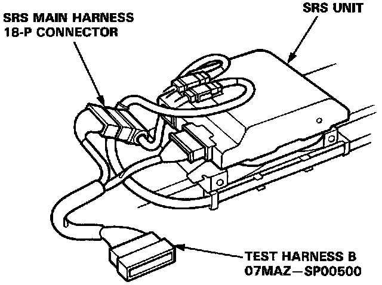
NOTE: Reconnect the driver's airbag connector for the following test.
3. Check continuity between the No. 1 terminal and body ground, and between the No.7 terminal and body ground.
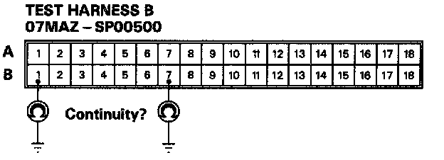
- If there is continuity, go to step 7.
- If there is no continuity, go to step 4.
NOTE: Reconnect the passenger's airbag connector for the following test.
4. Check continuity between the No.2 terminal and body ground, and between the No.8 terminal and body ground.
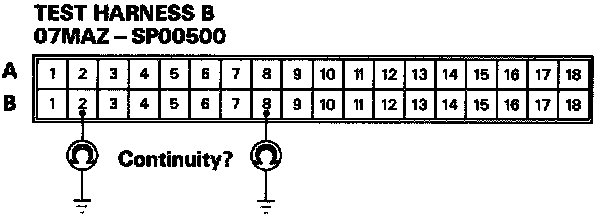
- If there is continuity, go to step 11.
- If there is no continuity, go to step 5.
NOTE: Reconnect the seat belt pretensioner 3-P connector for the following test.
5. Check continuity between body ground and each terminals of both seat belt pretensioners.
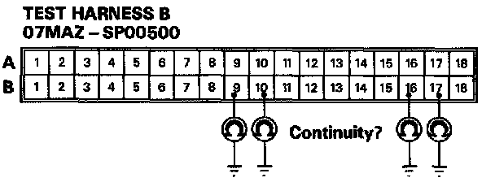
- If there is continuity, go to step 13.
- If there is no continuity, go to step 6.
6. Check continuity between body ground and each terminals of both dash sensors.
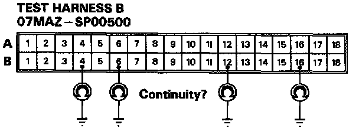
- If there is continuity at any of the terminals, go to step 17.
- If there is no continuity, go to step 18.
7. Disconnect the cable reel 6-P connector from the SRS main harness, then connect Test Harness C (O7LAZ-SL40300) only to the cable reel side of the 6-P connector.
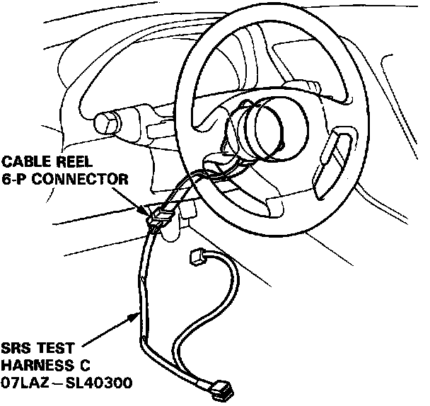
8. Check continuity between the No.4 terminal and body ground, and between the No.5 terminal and body ground.
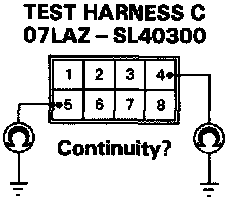
- If there is continuity, go to step 9.
- If there is no continuity, the SRS main harness is faulty. Replace it and recheck the voltages.
9. Disconnect the driver's airbag 3-P connector from the cable reel, then connect Test Harness C (O7LAZ-SL40300) to the driver's airbag 3-P connector.
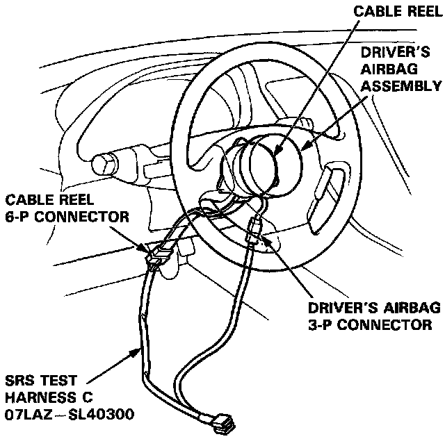
10. Check continuity between the No.7 terminal and body ground, and between the No.8 terminal and body ground.
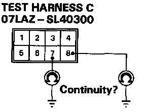
- If there is continuity, the driver's airbag inflator is faulty. Replace it and recheck the voltages.
- If there is no continuity, the cable reel is faulty. Replace it and recheck the voltages.
11. Disconnect the passenger's airbag 3-P connector from the SRS main harness, then connect Test Harness C (O7LAZ-SL40300) to the airbag side of the connector.
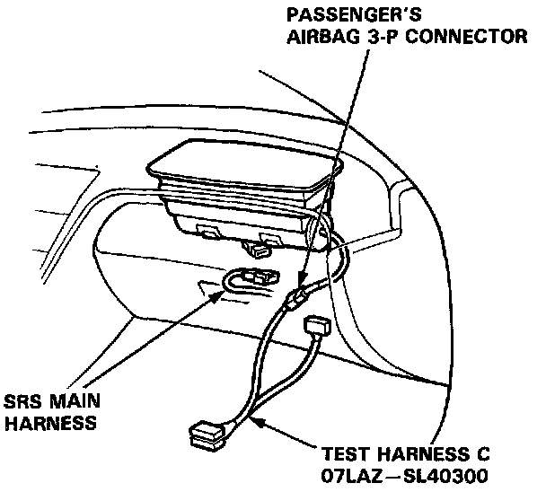
12. Check continuity between the No.7 terminal and body ground, and between the No.8 terminal and body ground.
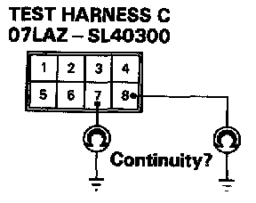
- If there is continuity, the passenger's airbag inflator is faulty. Replace it and recheck the voltages.
- If there is no continuity, the SRS main harness is faulty. Replace it and recheck the voltages.
13. Disconnect the driver's and passenger's pretensioner connectors between the SRS main harness and the floor wire harness. First, connect Test Harness C (O7LAZ-SL40300) to the floor wire harness side of the driver's pretensioner, and check continuity, then connect it to the floor wire harness side of the passenger's pretensioner 3-P connector, and check continuity again.
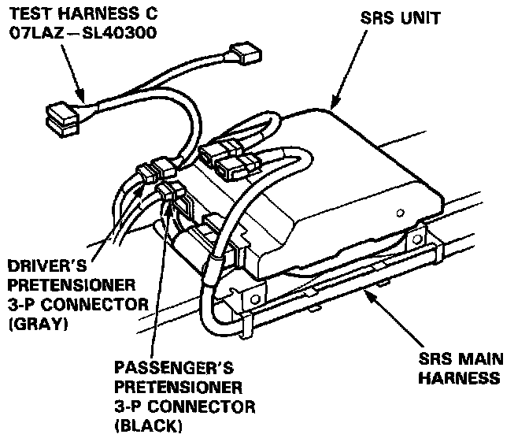
14. Check continuity between the No.7 terminal and body ground, and between the No.8 terminal and body ground.
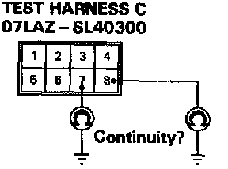
- If there is continuity, go to step 15.
- If there is no continuity, the SRS main harness is faulty. Replace it and recheck the voltages.
15. Disconnect the 3-P connector from the driver's and passenger's seat belt pretensioners, then connect Test harness C (O7LAZ-SL40300) to the seat belt pretensioner side of the connector, first on the driver's side, then on the passenger's side.
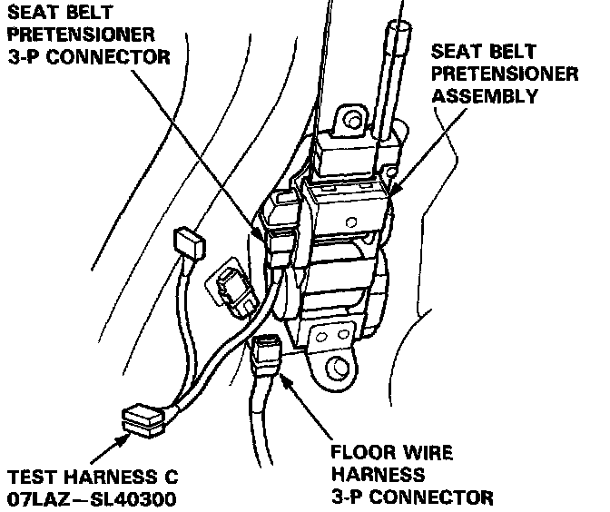
16. Check continuity between the No.7 terminal and body ground, and between the No.8 terminal and body ground.
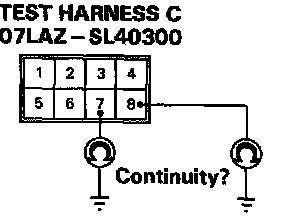
- If there is continuity, the seat belt pretensioner is faulty. Replace it and recheck the voltages.
- If there is no continuity, the floor wire harness is faulty. Replace the faulty harness and recheck the voltages.
17. Connect Test Harness D (O7LAZ-SL40400) between the dash sensor and SRS main harness 2-P connector. Check continuity between the No. 1 terminal and body ground, and between the No.2 terminal and body ground.
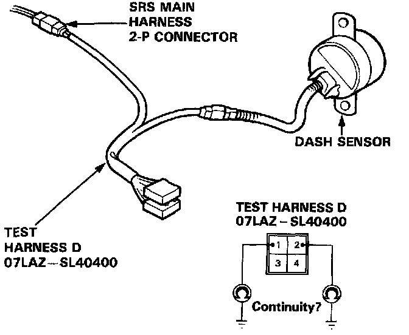
- If there is continuity, the dash sensor is faulty. Replace it and recheck the voltages.
- If there is no continuity, the SRS main harness is faulty. Replace it and recheck the voltages.
18. Check the resistance between the left dash sensor terminals B12 and B16, and between the right dash sensor terminals B4 and B6.
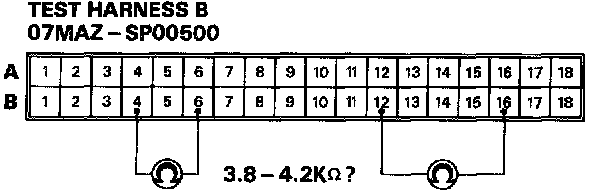
- If resistance is 3.8-4.2 K Ohmsfor both sensors, the SRS unit is faulty. Substitute a known-good SRS unit and recheck the voltages.
- If resistance is less than 3.8 K Ohms for either sensor, go to step 19.
19. Connect Test Harness D (O7LAZ-SL40400) between the dash sensor and SRS main harness 2-P connector. Check the resistance between the No.1 terminal and No.2 terminal.
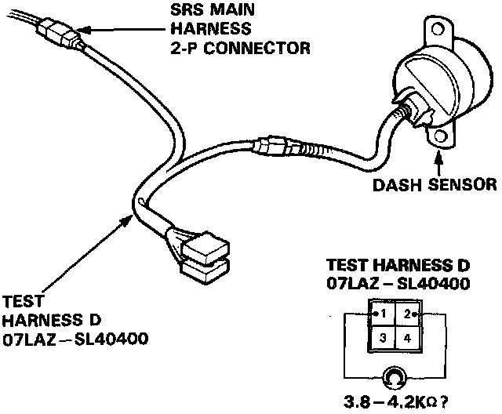
- If resistance is 3.8-4.2 K Ohms, the SRS main harness is faulty. Replace it and recheck the voltages.
- If resistance is less than 3.8 K Ohms, the dash sensor is faulty. Replace it and recheck the voltages.